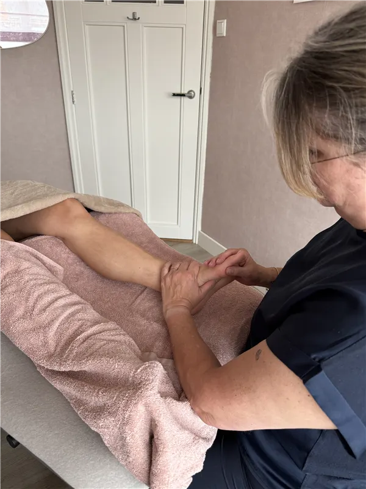
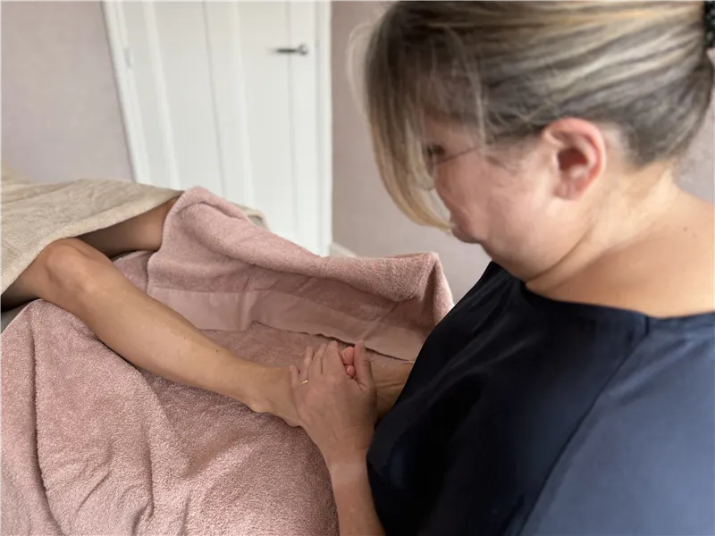
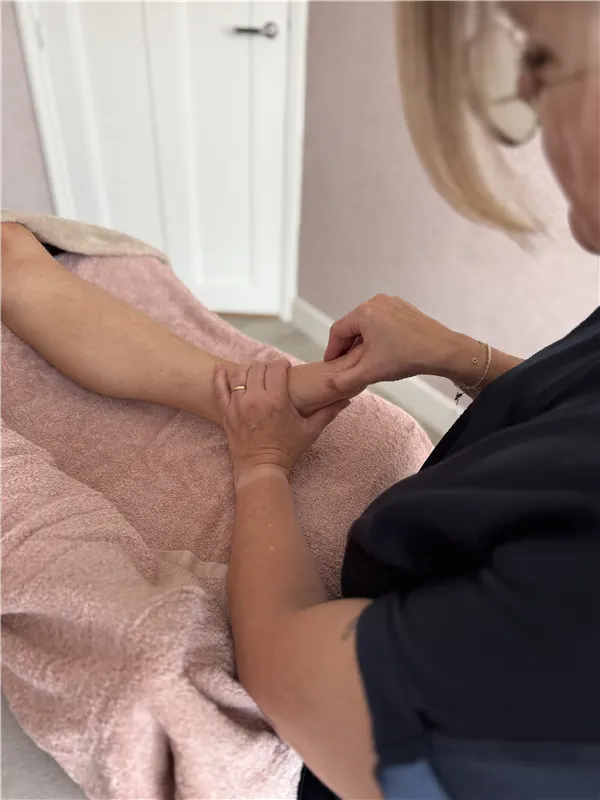
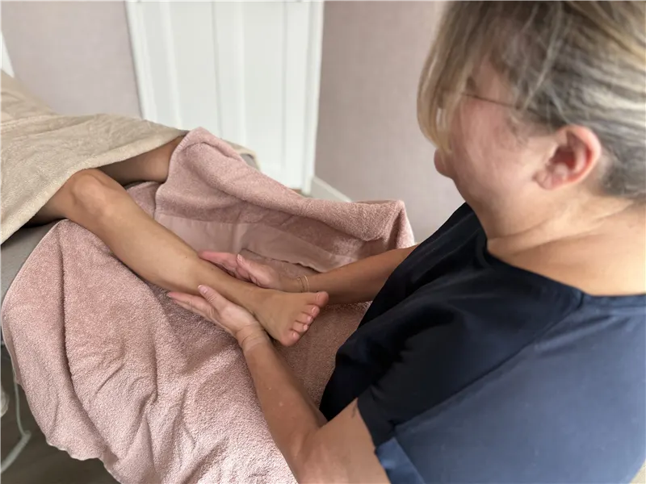
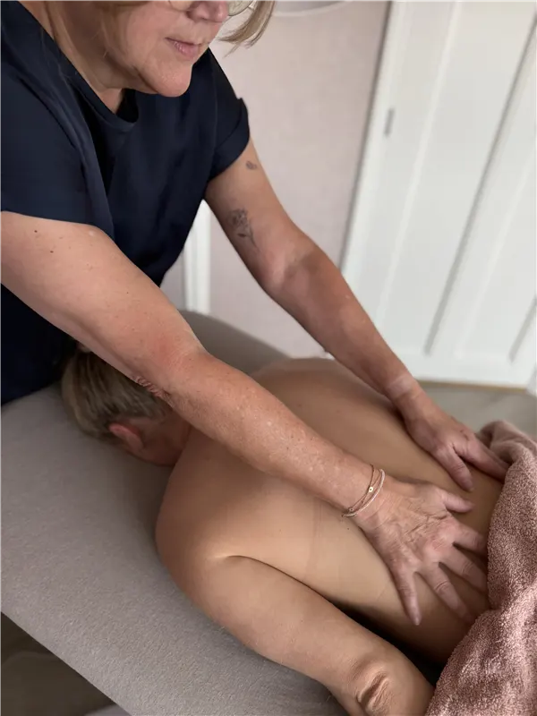
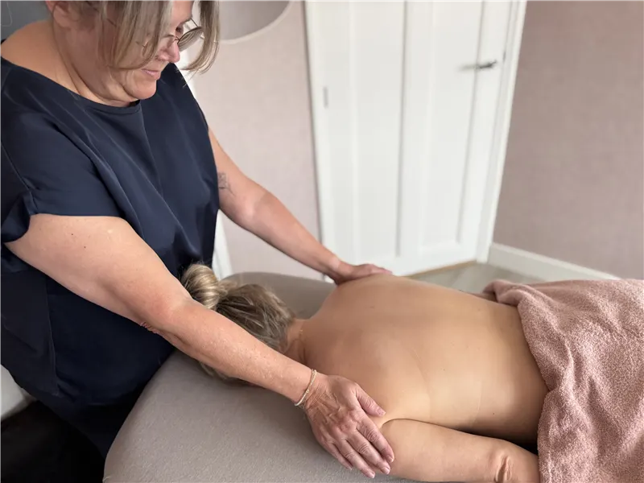
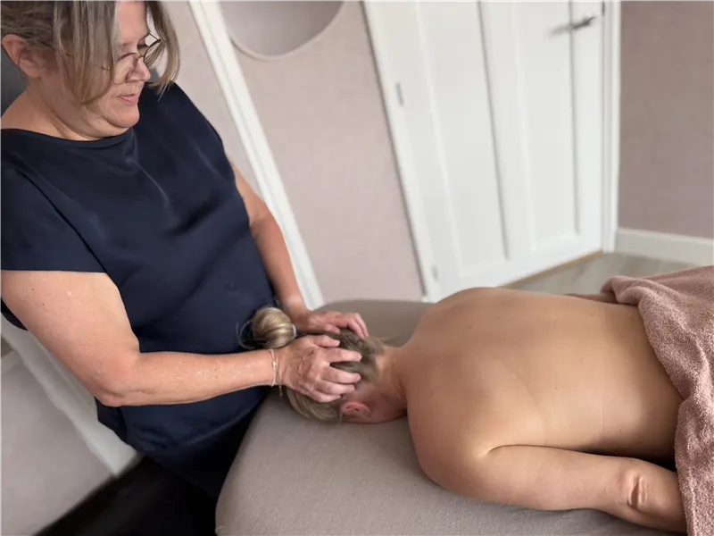

Behandelingen en tarieven
Bij Studio Anja kies je voor voetreflextherapie, een holistische total body massage of een combinatie van beide. Iedere behandeling wordt afgestemd op wat jij op dat moment nodig hebt.
- Voetreflex behandeling 45 minuten €50
- Holistische total body massage 60 minuten €60
- Combibehandeling Voetreflex en massage, 75 tot 90 minuten €90
Bij een eerste afspraak neem ik extra tijd voor de intake. Die gaat dus niet van je behandeltijd af.
Voetreflex behandeling
Een voetreflexbehandeling duurt 45 minuten. Je ligt of zit comfortabel, meestal in een verwarmde ruimte met zachte muziek, zodat je lichaam de kans krijgt om helemaal tot rust te komen. De behandeling bestaat uit drie delen.
-

Stap 1: We openen de voeten
We beginnen met rustige, vloeiende bewegingen over beide voeten. Dit is bedoeld om je te laten wennen aan de aanraking, je voeten los te maken en je lichaam de kans te geven om over te schakelen naar ontspanning.
-

Stap 2: We behandelen jouw specifieke klacht
Op basis van wat je hebt aangegeven, bijvoorbeeld vermoeidheid, spanning, spijsverteringsklachten, hoofdpijn of slaapproblemen, richten we ons op de zones die daarbij passen. Dit is het hart van de behandeling en kan soms wat drukkender aanvoelen, precies op de plekken waar het nodig is.
-

Stap 3: We sluiten af met een ontspanningsmassage
Tot slot krijgen je voet en onderbeen een rustgevende ontspanningsmassage. Dit haalt eventuele resterende spanning weg en zorgt dat je de behandeling in een staat van volledige rust afsluit.
Heb je vragen of wil je tijdens de behandeling iets aangeven? Laat het gerust weten. De behandeling wordt altijd op jouw klacht en wensen afgestemd.
Holistische total body massage
Een holistische total body massage duurt 60 minuten. Tijdens de behandeling nemen we rustig de tijd om je hele lichaam aandacht te geven, in een vaste, doordachte volgorde die je helpt om helemaal te ontspannen.
-

Stap 1: Je ligt eerst op je buik
We beginnen met een rustig moment van aanraking, zodat je kunt wennen en je ademhaling vanzelf rustiger wordt. Daarna volgen lange, vloeiende strijkingen over je hele rug, gevolgd door dieper kneedwerk in je schouders en onderrug: precies waar de meeste spanning vaak zit. Vervolgens gaan we naar je benen, van je enkels tot je bovenbenen, en we sluiten de achterzijde af met je voeten.
-

Stap 2: Je draait je om
Even een kort rustmoment terwijl je je omdraait, zodat de overgang zacht verloopt. We werken je benen aan de voorkant, daarna je armen en handen, heerlijk voor mentale ontspanning. Je buik krijgt zachte, cirkelende bewegingen die de spijsvertering ondersteunen. Ten slotte je decolleté en schouders, waar we vaak vastgehouden spanning rond je borstkas loslaten.
-

Stap 3: Nek, hoofd en gezicht
Je nek wordt zacht losgemaakt, gevolgd door een hoofdhuidmassage. Voor veel mensen is dat het meest ontspannende onderdeel van de hele behandeling. We eindigen bij je gezicht: voorhoofd, slapen en kaak, voor een kalme afronding. Tot slot nemen we een rustig moment om even stil te zijn, zodat je de tijd hebt om weer helemaal te landen voordat je opstaat.
Heb je ergens specifieke klachten of een plek waar je extra aandacht wilt? Laat het gerust weten voor of tijdens de behandeling. De massage wordt altijd op jou afgestemd.
Combibehandeling
75 tot 90 minuten€90
Kies voor een combibehandeling als je in één sessie het maximale uit je ontspanning wilt halen: de massage lost fysieke spanning op, terwijl de voetreflex dieper werkt op onderliggende klachten en processen. Beide technieken versterken elkaar, waardoor het effect groter en langduriger is dan bij een losse behandeling. Zo bespaar je tijd én krijg je een completere, meer waardevolle behandelervaring.
Een behandeling bij Studio Anja is een aanvulling op reguliere zorg, nooit een vervanging. Ben je onder behandeling bij een arts of specialist? Meld dit dan bij de intake, zodat ik daar rekening mee kan houden.